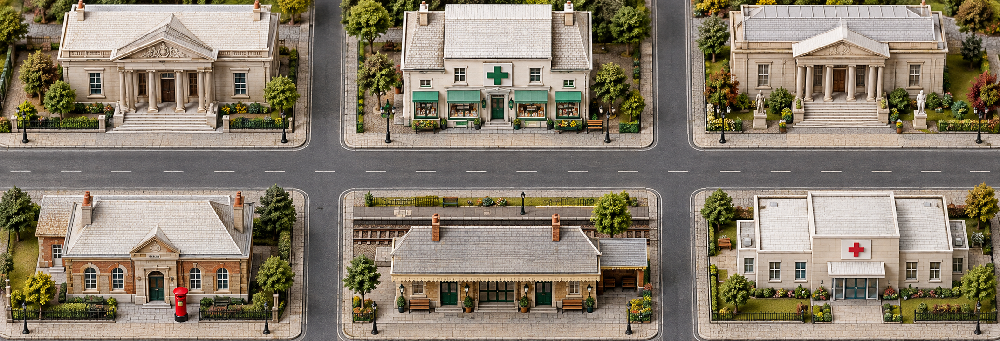

Vocabulary practice · 6A
City life or country life?
Choose places for a new town center

WORD BANK · Study first. Cover the word bank for memory games.
Places and purposes6A
| Place | Useful chunk |
|---|---|
| bank | get cash |
| pharmacy | buy medicine |
| post office | send a letter |
| hospital | see a doctor |
| train station | take a train |
| museum | look at art and history |
a letter → Dear Ana, …
an alphabet letter → A, B, C